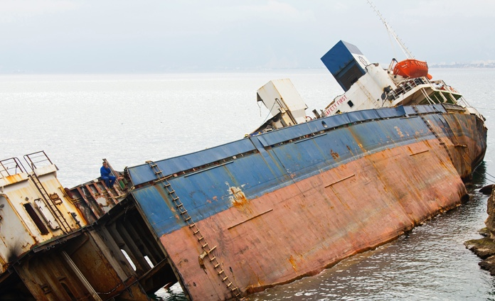
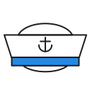
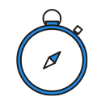

안전한 향해, YATSAFE는
선택이 아닌 필수입니다
해양 사고는 아무도 예측할 수 없습니다. YATSAFE 안전키트로 사고 시 빠르게 조치하고 더 큰 위험을 막을 수 있습니다. 지금 안전한 항해를 위해 한걸음 더 나아가 보세요. 더 알아보기
개인 구매 안내
YATSAFE의 솔루션에 관심이 있으신가요?
YATSAFE 안전키트는 다음의 매장에서 구매가 가능합니다.


누구나 쉽게 사용하는 YATSAFE
선박 내에 YATSAFE 안전키트를 비치하고 위급 시 손쉽게 사용하세요.
-
평상시
요트 내에서 동료 및 친구와 편하게 쉴 수 있는 의자로 사용하세요.
의자 내에 안전키트가 들어있어 수납공간 걱정 없이 사용가능합니다. -

사고발생시
의자 내에서 빠르게 꺼내 손상구멍을 막을 수 있는 안전키트로 사용하세요.
누구나 쉽게 사용할 수 있습니다.
선박 파손 시 빠르게 대처하세요
해양사고로 인한 선박 파손 시 YATSAFE 안전키트로 빠르게 대처해 추가피해를 막을 수 있습니다.
- 응급복구시간을 기존 대비 10분의 1로 단축
- 손상 차단률 98%, 직경 1cm~25cm 크기의 모든 손상부 2분 차단
- 0.3bar 수압의 파공 봉쇄 성공확률 95%
YATSAFE의 선박 손상통제 기술
YATSAFE 안전키트에 선박 유해물질 유출 차단기술과 선체 파손 복구 시스템 기술을 담았습니다.
-

해양사고를 미리 대비하세요
전세계적으로 매년 대형&소형 선박 해양사고가 꾸준히 발생하고 있습니다. YATSAFE 키트로 해양사고를 미리 대비해 보세요. -

사고 시 초동조치를 빠르게 수행하세요
작은 구멍이 파손되어도 10분 내 침몰할 수 있는 선박 특성 상 초동조치가 중요합니다. YATSAFE 키트로 추가피해를 막을 수 있습니다. -

해양 오염을 방지하세요
선박사고 시 기름 등이 유출, 빠르게 확산되어 해양 오염 피해가 발생합니다. 빠르게 손상부를 차단하는 YATSAFE 키트로 해양 오염을 방지하세요.
파공 부위 효과적 차단
신속함을 요하는 선박 손상 사고에서는 빠른 차단과 신속 대응이 가장 중요합니다.
YATSAFE 안전키트는 위험을 가장 효과적으로 차단하는 해양 필수 안전제품 입니다.
파공 봉쇄 성공확률 95%
직격 1cm~25cm 크기의 모든 손상부를 2분만에 차단이 가능하며0.3bar 수압의 파공 봉쇄 성공확률이 95%에 달합니다.
선박을 지키는 가장 쉬운 방법
지금 바로 YATSAFE 안전키트를 선박에 비치해 보세요.
선주, 업체 등 해양산업 관련 기업은 누구든 YATSAFE의 고객이 될 수 있습니다.
-

요트선주
레저를 위해 요트를 운용하는 선주이신가요?
YATSAFE로 안전한 레저를 시작하세요. -

요트 렌탈업체
요트를 제공하는 렌탈업체 이신가요?
YATSAFE로 고객만족도를 높여보세요. -

선박 장비업체
해양 선박 관련 장비를 판매하고 계신가요?
YATSAFE는 안전한 레저를 위해 필수입니다.